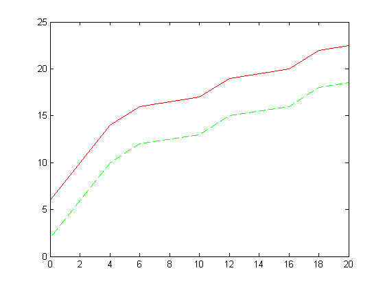

Part 2: Min-Plus/Max-Plus Algebra
Contents
Basic Operations
The Real-Time Calculus (RTC) Toolbox defines a number of basic operations on curves that are explained in the following.
Let us again first create two curves f and g
f = rtccurve([[0 2 2]], [[0 0 1];[2 2 0.25]], 4, 6); g = rtccurve([[0 0 0];[5 0 1];[10 5 2]]);
The sum of two curves f and g is computed with the rtcplus function h = rtcplus(f, g). The sum is thereby defined as the point-wise sum of the two curves.
h = rtcplus(f, g); rtcplot(f, 'g--', g, 'b--', h, 'r', 20);

It is also possible to add a scalar to a curve h = rtcplus(f, 4). The sum of a curve and a scalar is defined as the point-wise sum of the curve and the scalar.
h = rtcplus(f, 4); rtcplot(f, 'g--', h, 'r', 20);
Note, the unary plus of a curve h = rtcuplus(f) is also defined and creates a deep clone of a curve. To fully understand the usefulness of this operator, it has to be noted that curves are JAVA objects within Matlab.
The substraction of two curves f and g is computed with the rtcminus function h = rtcminus(f, g). The substraction is thereby defined as the point-wise substraction of the two curves.
h = rtcminus(f, g); rtcplot(f, 'g--', g, 'b--', h, 'r', 20);
It is also possible to substract a scalar from a curve: h = rtcminus(f, 4). The substraction of a curves and a scalar is defined as the point-wise substraction of the curve and the scalar.
h = rtcminus(f, 4); rtcplot(f, 'g--', h, 'r', 20);
Analogously it is also possible to substract a curve from a scalar: h = rtcminus(4, f).
h = rtcminus(4, f); rtcplot(f, 'g--', h, 'r', 20);
The function rtcminus returns the negation of a curve:
h = rtcuminus(f); rtcplot(f, 'g--', h, 'r', 20);
The rtcmax operator is used to compute the maximum of two curves h = rtcmax(f, g). The maximum of two curves is again defined as the point-wise maximum of the curves.
h = rtcmax(f, g); rtcplot(f, 'g--', g, 'b--', h, 'r', 20);
The rtcmin operator is used analogously to compute the minimum of two curves h = rtcmin(f, g).
h = rtcmin(f, g); rtcplot(f, 'g--', g, 'b--', h, 'r', 20);
A curve can be scaled along the y-axis with the rtcrdivide function h = rtcrdivide(f, 3) and the rtctimes function h = rtctimes(f, 5). The division of a curve and a scalar is defined as the point-wise division of the curve with the scalar, while the multiplication is defined as the point-wise multiplication.
h = rtcrdivide(f, 1.2); rtcplot(f, 'g--', h, 'r', 20);
h = rtctimes(f, 3.4); rtcplot(f, 'g--', h, 'r', 20);
The rtcaffine operator is used to compute the affine transformation of a curve h(x) = f(1/a*(x-b)) or f(x) = h(a*x + b). That is, a curve can be scaled and moved along the x-axis with this operator. Note, if f is a curve with a periodic part with period p then a*p must be an positive natural number.
h = rtcaffine(f, 0.5, 3); rtcplot(f, 'g--', h, 'r', 20);
The rtcinvert operator is used to invert a curve f.
h = rtcinvert(f); rtcplot(f, 'g--', h, 'r', 20);
The rtcceil and the rtcfloor operators are used to compute the point-wise ceil h = rtcceil(f) or floor h = rtcfloor(f) of a curve, respectively.
h = rtcceil(f); rtcplot(f, 'g--', h, 'r', 20);
h = rtcfloor(g); rtcplot(g, 'b--', h, 'r', 20);
The operator rtch can be used to compute the maximum horizontal discance between two curves d = rtch(f, g). The maximum horizontal distance is thereby defined as
The operator rtcv can be used analogously to compute the maximum vertical discance between two curves d = rtcv(f, g). The maximum vertical distance is thereby defined as
Comparisons
The Real-Time Calculus (RTC) Toolbox so far only defines the equality comparison operator.
The rtceq function checks whether two curves are equal rtceq(f, g).
Complex Operations
The Real-Time Calculus (RTC) Toolbox defines a number of complex operations on curves that are explained in the following.
The rtcminconv operator computes the min-plus-convolution of two curves h = rtcminconv(f, g) that is defined as
The rtcminconv operator is also defined for a curve and a scalar.
h = rtcminconv(f, g); rtcplot(f, 'g--', g, 'b--', h, 'r', 20);
The rtcmindeconv operator computes the min-plus-deconvolution of two curves h = rtcmindeconv(f, g) that is defined as
The rtcmindeconv operator is also defined for a curve and a scalar.
h = rtcmindeconv(f, g); rtcplot(f, 'g--', g, 'b--', h, 'r', 20);
The rtcmaxconv operator computes the max-plus-convolution of two curves h = rtcmaxconv(f, g) that is defined as
The rtcmaxconv operator is also defined for a curve and a scalar.
h = rtcmaxconv(f, g); rtcplot(f, 'g--', g, 'b--', h, 'r', 20);
The rtcmaxdeconv operator computes the max-plus-deconvolution of two curves h = rtcmaxdeconv(g, f) that is defined as
The rtcmaxdeconv operator is also defined for a curve and a scalar.
h = rtcmaxdeconv(g, f); rtcplot(f, 'g--', g, 'b--', h, 'r', 20);
Concatenation
The rtcconcat operator computes the concatenation of two curves g and f as g(f).
h = rtcconcat(g, f, 'lower'); rtcplot(g, 'g--', f, 'b--', h, 'r', 20);
Note that the semantics of the concatenation depends on the evaluation of a curve at a given place. If a curve is discontinuous, the evaluation of an upper and a lower curve is different. Therefore, one needs to specify whether the curves are 'upper' or 'lower' curves.
Visualizations
The Real-Time Calculus (RTC) Toolbox defines a number of functions to visualize data about curves.
The function rtcplotbounds plots the upper and lower bounds of a curve. Note, for a curve with a periodic part, the upper and lower bounds are only defined after the start of the periodic part, while for a curve with no periodic part, the last curve segment of the curve is treated as the upper as well as the lower bound of the curve.
rtcplot(f); rtcplotbounds(f);
The function rtcploth plots and computes the maximum horizontal distance between two curves f and g, that can also be computes as d = rtch(f, g).
rtcplot(f, 'r--', g, 'b--', 20); d = rtcploth(f, g)
d =
8.5000
The function rtcplotv plots and computes the maximum vertical distance between two curves f and g, that can also be computes as d = rtcv(f, g).
rtcplot(f, 'r--', g, 'b--', 20); d = rtcplotv(f, g)
d =
11